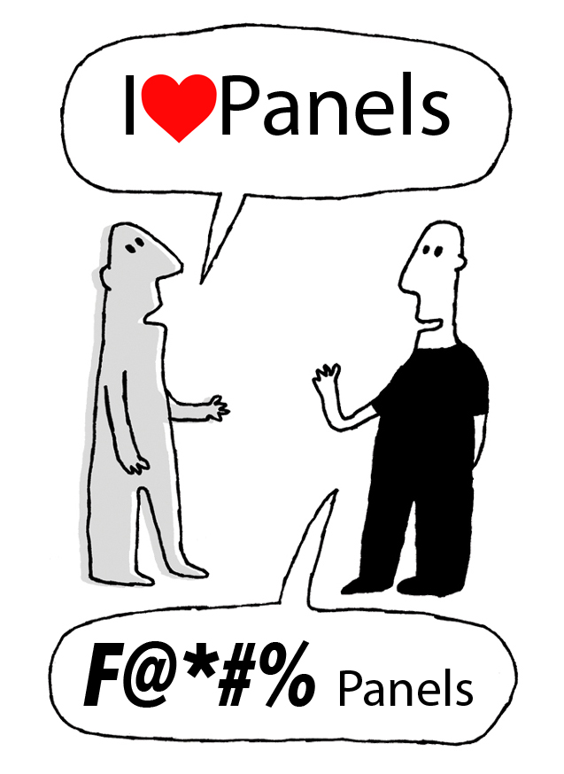
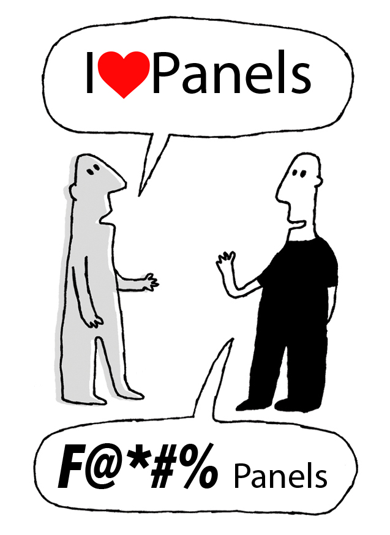

Page Manager, Panels, Context...
all the awesome in Drupal
Presented by Tom Friedhof
Tom Friedhof
Subscribe to our YouTube Channel
http://youtube.com/activelamp
 

It's way too slow!
We'll do it live
Subscribe to our YouTube Channel
http://youtube.com/activelamp
Questions?
Send me an email:
tom@activelamp.com
or in IRC #drupal-la